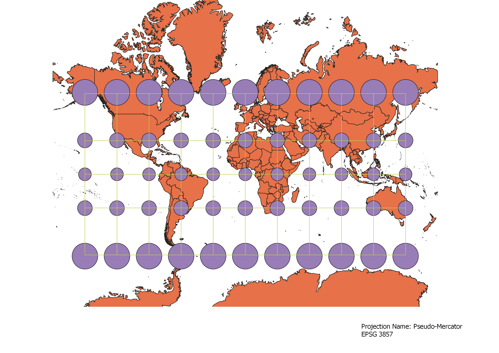
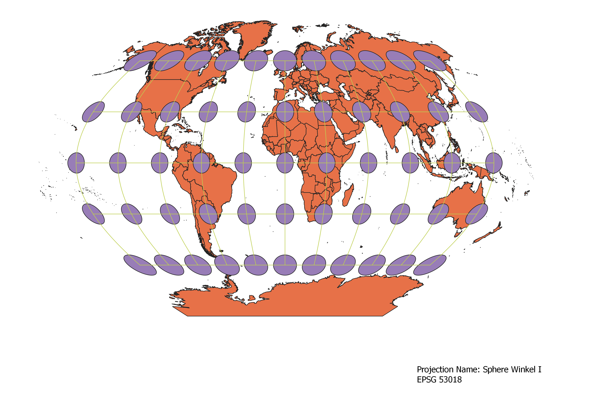
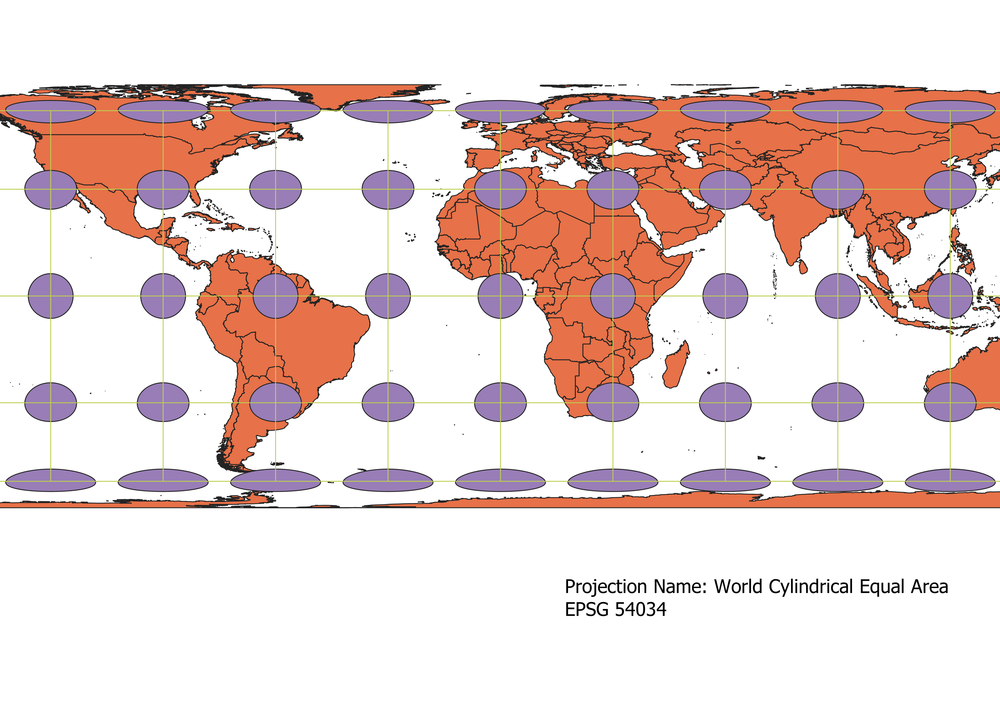
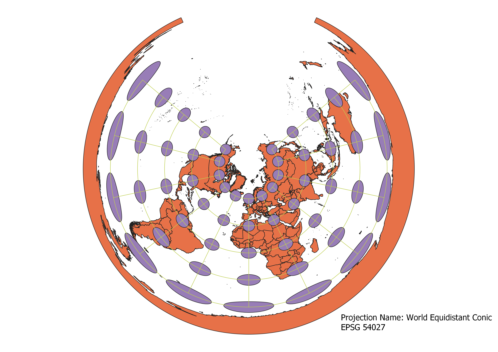
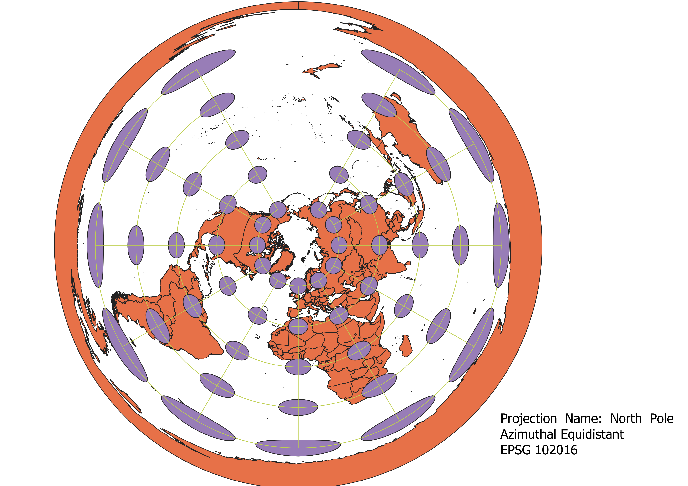
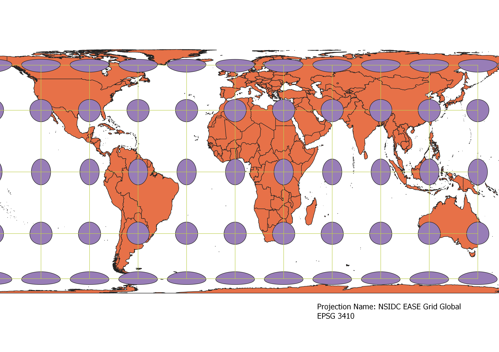
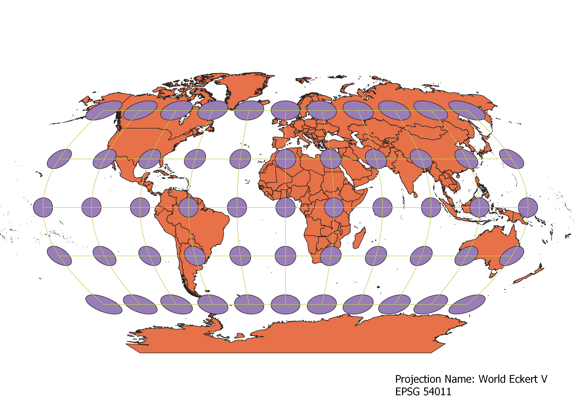

In this project I learned how to display images in different projections
Describe in your own words how you displayed the map in different projections using QGIS
Before importing any sort of map into QGIS, I first downloaded the Indicatrix Mapper
plugin into QGIS. This plugin allows Tissot's indicatrix to be calculated based on
the given projection. After this, I imported the vector map into the program, and then
on the bottom right corner of the window, there is an indicator that tells the user
what the current projection is. If you click on that, you'll be able to change
the projection. The plugin will also automatically recalculate Tissot's indicatrix.
WGS84 Projection
This projection tries to keep the map as equidistant as possible, as indicated by
the grid lines between the circles being equal length. However, in preserving the
distance, the shape and size are sacrificed. As the projection moves toward the
poles, the shape gets streched horizontally and is enlarged.

Aitoff Projection
This projection tries to portray the curvy nature of Earth, and so tries to
curve the projection in 2D. This causes the center of the map, i.e. the equator and
the prime meridian, to be more accurate. However, as the projection gets more and more
curved at the edges, the projection sacrifices shape and area at the western and eastern
edges.

Pseudo Mercator
This projection tries to conserve the shape of countries, however in doing so causes the
size and distance to be distorted. As the projection goes towards the poles, the size and
distance is increased. A notable effect of this is that Greenland seems to be as big
as the African continent, but in reality Greenland is only about 1/5 of the size of Africa.

Sphere Winkel I
This projection tries to portray the Earth's curvature, as well as tries to conserve
distance. However, in doing so, the entire projection causes the map to be streched
vertically, and this effect is more noticeable as you go towards the poles.

World Cylindrical Equal Area
This projection tries portray the globe as the surface of a cylinder of equal diameter
and height as the sphere. This causes the distance of countries to be conserved, but in
return the shape is sacrificed. As projection moves towards the poles, the projection
streches the countries horizontally.

World Equidistant Conic
This projection tries to portray the globe as the surface of a cone of equal base diameter
and height as the sphere. This causes the point of the cone, which is demonstrated as being
the North Pole, to be more accurate, as well as portray the world as being viewed from the
"top" of the globe. However, as the projection moves away from the center, which is equivalent
to moving towards the south,the distortion of size and shape is greatly intensified. The shape
and size gets streched horizontally, as well as its size being increased.

North Pole Azimuthal Equidistant
This projection tries to portray the globe as the surface of a cone of equal base diameter
and height as the sphere (similar to the World Equidistant Conic projection). This time, the
projection tries to keep the vertical distances (from north to south) as equidistant as possible.
Also, the horizontal distances are also equidistant, however only in their angular distance from
the center (North Pole). However, in doing so, the map is distorted in shape and size as the projection
moves toward the edge, i.e. as the projection moves towards the South Pole.

NSIDC EASE Grid Global
This projection tries to balance the conservation of distance and area. As the projection
moves toward the poles, the distance and area are both increased, but not as drastic
as some of the other projections. However, in conserving distance and area, the shape
is greatly distored, even at the equator where is it is stretched more vertically in the
equator and streached more horizontally near the poles.

World Eckert V
This projection tries to conserve all three aspects of map-making: distance, shape and size.
This projection also tries to display the curvature of the globe on a flat plane. This projection
is the most balanced out of the projections on this page. As the projection moves towards the poles,
the size is increase only a bit, the shape is relatively kept (though the western and eastern edges
are more distorted), and the distances between countries also increase only by a bit.

Data used for this project
Download Natrual Earth 1:10m Cultural Vector